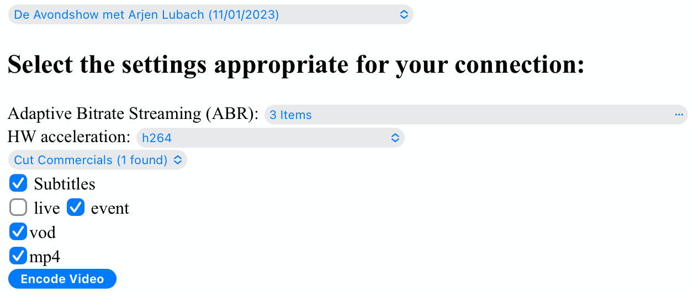

MythTV stream DASH and HLS fMP4
Table of Contents
1. Description
Supports transcode and streaming of any MythTV recording to be watched via the browser.
Why:
- Although support for HTTP Live Streaming (HLS) was added to MythTV in 0.25, it is still not at a point to be usable.
- HTML 5 video for Mythweb is not supported out of the box.
- MythWeb is still based on Flash technology from the days of yore.
- Attempts to overcome these shortcomings, like the MythTV stream mpeg DASH project, lacks support for HLS, fragmented MP4 (fMP4), Adaptive Bitrate Streaming (ABR), live recording, live TV, subtitles, etcetera.
What:
- Support for streaming (serving) MythTV content to other devices (web browser—mobile, desktop, tablet, etc.) irrespective of the OS.
- The techniques used support many users viewing the same playlist.
- Transcoding from whatever format your recordings are in, as long as they are recognized by FFmpeg.
- Support for live broadcasts and prerecorded content.
- Support for less reliable networks (e.g. cell phone browser).
- Support for offline viewing.
How:
- Encoding of MythTV recordings to DASH and HLS, providing playlist types \(live\), \(event\) and \(VOD\) for streaming.
- The use of fragmented MP4 files makes DASH compatible with HLS so the same files are used; only the manifest file (playlist) is different.
- Transcode videos to two renditions for adaptive playback.
- Transcoding to \(mp4\) for playback without internet.
- Simple PHP based browser interface supporting a number of highly desirable usecases.
- Video files are codified using H.264 format and audio is supported with AAC.
Supports the following usecases:
- No MythTV frontend is required, a browser with HTML 5 support is enough.
- Device independent viewing.
- Support for streaming while encoding.
- Support for prerecorded content.
- Support for transcoding to MP4 for offline viewing.
- Support for MythTV cutlist.
- Watch recording while transcode is still taking place (just don't seek too far ahead).
- Watch prerecorded video.
- Use commercial cut info from MythTV database to cut commercials before streaming.
- Support for live HDHomeRun streaming without MythTV interference.
- Care for your hard drives by using a ramdisk for \(live\) playlist, storing the playlist and the fragments.
2. Background information
HLS (HTTP Live Streaming) and DASH (Dynamic Adaptive Streaming over HTTP) are two popular methods of delivering video to consumers over the internet. Both are types of Adaptive Bitrate (ABR) delivery, which means the video player can dynamically select the bitrate that is being delivered to the end viewer during playback as the viewer’s internet connection speed may change during playback. Rather than stalling and buffering the video, the player can switch to a lower bitrate and continue playing.
Each bitrate variant that we create for HLS or DASH is called a rendition. Adaptive Bitrate streaming requires that each rendition be split into a series of segments, each generally 2 to 10 seconds long. This allows the player to switch bitrates on the segment boundaries by loading the next segment from a different rendition than the one currently playing.
Playlist \(Live\) is just what the name suggests: view in real-time the content that’s being created. Encoding is done at native frame rate of the input. With live streaming, there is little lag time between encoding and viewing. It can be used for recorded content and with live recording. Note, it is not possible to pause the streaming longer than one minute without loosing the content due to the Sliding Window Construction.
Playlist \(Event\) allows for encoding speeds which are higher than the frame rate of the input. This means the user has more freedom to seek through the video (forward and backward) while recording. Moreover, it allows one to view the content from the start of the video with live recording.
Playlist \(VOD\) basically provides the same as event streaming, though technically the term is used for a playlist file that is immutable, i.e. prerecorded content. VOD allows users to access the videos whenever, wherever (internet connection provided) they want to watch them. Note, only VOD provides a DASH manifest which enables playback using the Edge browser.
3. This depends on:
- MythTV (for commerical cut info and looking up the name of each recording
based on filename)
- version v0.33
- FFmpeg (for transcoding)
- FFmpeg version 5.1.3
- GNU screen
- This is to allow monitoring of transcode and packager and to support background processes launched by the web-facing PHP script
- apt-get install screen
- Shaka player
- This is the Javascript-based browser player that plays MPEG DASH content
- version 4.3.6
4. Features
Subtitles when available in the input source can be selected by the user for live recording and recorded video. Different pre-/postprocessing techniques are required to handle this for the available playlist types.
Features support for recorded video are shown in table 1. Note, on user request for subtitles a separate prepossessing step is required.
| hls | dash | subtitle | subtitle | Adaptive Bitrate Streaming | |
|---|---|---|---|---|---|
| (realtime viewing) | (postprocessing required) | ||||
| live | ✅ | ✅ | ✅ | ||
| event | ✅ | ✅ | ✅ | ||
| VOD | ✅ | ✅ | ✅ | ✅ | |
| mp4 | ✅ |
Features supported for live recording are shown in table 2. Note, Adaptive Bitrate Streaming is not supported for live recordings.
| hls | dash | subtitle | subtitle | |
|---|---|---|---|---|
| (realtime viewing) | (postprocessing required) | |||
| live | ✅ | ✅ | ||
| event | ✅ | ✅ | ||
| VOD | ✅ | ✅ | ✅ | |
| mp4 | ✅ |
All possible combinations of playlist types and mp4 are shown in table 3. Note, all can be combined with \(Quality\), \(Commercial cut\) and \(subtitles\) selection.
| live | event | VOD | mp4 |
|---|---|---|---|
| ✅ | |||
| ✅ | ✅ | ||
| ✅ | ✅ | ||
| ✅ | ✅ | ✅ | |
| ✅ | |||
| ✅ | ✅ | ||
| ✅ | ✅ | ||
| ✅ | ✅ | ✅ | |
| ✅ | |||
| ✅ | |||
| ✅ | ✅ |
5. Example
5.1. User interface

Figure 1: User interface
User interface:
- Select the desired recording from the list box.
- Select the \(Quality\) (ABR streaming) from the list box.
- Select if the \(Cutlist\) should be used. Note, this option is only visible in the UI when a \(Cutlist\) is defined in MythTV.
- Select using the checkbox if \(Subtitles\) should be used or not. Note, this option is only visible when subtitles are available in the video file.
- Select using the checkboxes if playlist type \(live\) xor \(event\) should be used.
- Select if playlist type \(VOD\) should be used.
- Select if a \(MP4\) file should be created.
- Press \(Encode Video\) when you are satisfied with your choices.
5.2. Screenshot 2

Figure 2: Remuxing
Remuxing:
Two buttons are shown. The first button \(Delete Video Files\) basically does what is says. Note, this will not delete any file from MythTV or change the MySQL database.
In the previous screenshot the user selected the option to \(Cut Commercials\). This requires the video to be remuxed to a MP4 container. The second button shows the progress of the remuxing.
5.3. Screenshot 3

Figure 3: Generating video
After the remuxing is done, the second button shows the progress of the encoding as a percentage and an indication of the time of the available video. When there is about 30 seconds of video available the player automatically tries to load the video.
Note, loading only works for live streaming. If no still of the video is shown after 30 seconds reload the browser page and start the video for viewing.
5.4. Screenshot 4

Figure 4: Status
One can also click the second button, showing the progress of the encoding. This will trigger a popup message box with a detailed view of the the steps involved and the status thereof.
5.5. Screenshot 5

Figure 5: User interface
When the encoding is done refresh the browser page. The user interface now shows three buttons. Next to the \(Delete Video files\) button a new button appeared \(Cleanup Video Files\). Note, his button is only shown when both playlist types \(event\) and \(VOD\) are selected. Since both playlist types basically provide the same user experience, i.e. prerecorded content, one may decide to remove the playlist \(event\) content to reduce disk space. This is exactly what the \(Cleanup Video Files\) button does.
Reloading the browser page may also reveal links to the playlist types requested, as shown in the screenshot for \(HLS Event\) and \(VOD\). It may also reveal a \(Download mp4\) link. The latter is only visible when the encoding has finished and optionally the selected subtitles are mixed in. The links are provided to allow the user to select the playlist type. Additionally, old devices not supporting the Shaka video player of the UI, may still be able to play the content through the links provided. The links may also be useful for another apps.
The screenshot also shows Shaka support for the UI: Captions, Resolution, Language, Picture-in-Picture, Playback speed, and Airplay.
6. Generated script
The generated shell script \(encode.sh\) for the example above is shown in all its detail below. For illustration purposes the code is shown in separate code blocks here.
6.1. Code block 1
This code block shows how remuxing of the input source to a \(MP4\) container is done. This allows FFmpeg to use the \(concat demuxer\) later in the script. In MythTV one can define the \(cutlist\) which translates into the inpoint's and outpoint's of the video.
cd /var/www/html/hls/10100_20231012201900 /usr/bin/sudo /usr/bin/screen -S 10100_20231012201900_remux -dm /usr/bin/sudo -uapache /usr/bin/bash -c '/usr/bin/echo `date`: remux start > /var/www/html/hls/10100_20231012201900/status.txt ; \ /usr/bin/sudo -uapache /usr/bin/ffmpeg \ -y \ -hwaccel vaapi -vaapi_device /dev/dri/renderD128 -hwaccel_output_format vaapi \ -txt_format text -txt_page 888 \ -fix_sub_duration \ -i /mnt/mythtv2/store//10100_20231012201900.ts \ -acodec copy \ -vcodec copy \ -scodec mov_text \ /var/www/html/hls/10100_20231012201900/video.mp4 && \ /usr/bin/echo `date`: remux finish success >> /var/www/html/hls/10100_20231012201900/status.txt || \ /usr/bin/echo `date`: remux finish failed >> /var/www/html/hls/10100_20231012201900/status.txt' while [ ! "`/usr/bin/cat /var/www/html/hls/10100_20231012201900/status.txt | /usr/bin/grep 'remux finish success'`" ] ; \ do \ sleep 1; \ done
6.2. Code block 2
Add subtitles to the \(master_event.m3u8\) file as soon as the file is created by FFmpeg some time in the future:
(while [ ! -f "/var/www/html/hls/10100_20231012201900/master_event.m3u8" ] ; \ do \ /usr/bin/inotifywait -e close_write --include "master_event.m3u8" /var/www/html/hls/10100_20231012201900; \ done; \ /usr/bin/sudo -uapache /usr/bin/sed -i -E 's/(#EXT-X-VERSION:7)/\1\n#EXT-X-MEDIA:TYPE=SUBTITLES,GROUP-ID="subtitles",NAME="Dutch",DEFAULT=YES,FORCED=NO,AUTOSELECT=YES,URI="sub_0_vtt.m3u8",LANGUAGE="dut"/' /var/www/html/hls/10100_20231012201900/master_event.m3u8; \ /usr/bin/sudo -uapache /usr/bin/sed -i -E 's/(#EXT-X-STREAM.*)/\1,SUBTITLES="subtitles"/' /var/www/html/hls/10100_20231012201900/master_event.m3u8; /usr/bin/sudo -uapache /usr/bin/sed -e :a -e '$d;N;2,6ba' -e 'P;D' -i /var/www/html/hls/10100_20231012201900/master_event.m3u8;) &
6.3. Code block 3
Add subtitles to the \(master_vod.m3u8\) file as soon as the file is created by FFmpeg some time in the future:
(while [ ! -f "/var/www/html/vod/10100_20231012201900/master_vod.m3u8" ] ; \ do \ /usr/bin/inotifywait -e close_write --include "master_vod.m3u8" /var/www/html/vod/10100_20231012201900; \ done; \ /usr/bin/sudo -uapache /usr/bin/sed -i -E 's/(#EXT-X-VERSION:7)/\1\n#EXT-X-MEDIA:TYPE=SUBTITLES,GROUP-ID="subtitles",NAME="Dutch",DEFAULT=YES,FORCED=NO,AUTOSELECT=YES,URI="sub_0_vtt.m3u8",LANGUAGE="dut"/' /var/www/html/vod/10100_20231012201900/master_vod.m3u8; \ /usr/bin/sudo -uapache /usr/bin/sed -i -E 's/(#EXT-X-STREAM.*)/\1,SUBTITLES="subtitles"/' /var/www/html/vod/10100_20231012201900/master_vod.m3u8;) &
6.4. Code block 4
Pre-processing is necessary to extract the subtitles from the recorded video:
/usr/bin/sudo -uapache /usr/bin/bash -c '/usr/bin/echo `date`: subtitle_extract start >> /var/www/html/hls/10100_20231012201900/status.txt'; \ /usr/bin/sudo -uapache /usr/bin/mkdir -p /var/www/html/vod/10100_20231012201900; /usr/bin/sudo -uapache /usr/bin/mkdir -p /var/www/html/hls/10100_20231012201900; \ cd /var/www/html/hls/; \ /usr/bin/sudo -uapache /usr/bin/ffmpeg \ -fix_sub_duration \ -hwaccel vaapi -vaapi_device /dev/dri/renderD128 -hwaccel_output_format vaapi \ -txt_format text -txt_page 888 \ -f concat -async 1 -safe 0 -i /var/www/html/hls/10100_20231012201900/cutlist.txt \ -map 0:s:0 -c:s webvtt \ \ -f tee \ "[select=\'s:0,sgroup:subtitle\']10100_20231012201900/subtitles.vtt" \ 2>>/tmp/ffmpeg-subtitle-extract-hls-10100_20231012201900.log && /usr/bin/sudo -uapache /usr/bin/bash -c '/usr/bin/echo `date`: subtitle_extract success >> /var/www/html/hls/10100_20231012201900/status.txt' || /usr/bin/sudo -uapache /usr/bin/bash -c '/usr/bin/echo `date`: subtitle_extract failed >> /var/www/html/hls/10100_20231012201900/status.txt' while [ ! "`/usr/bin/cat /var/www/html/hls/10100_20231012201900/status.txt | /usr/bin/grep 'subtitle_extract success'`" ] ; \ do \ sleep 1; \ done
6.5. Code block 5
Add language information to the \(master_vod.m3u8\) file as it is created by FFmpeg some time in the future:
(while [ ! -f "/var/www/html/vod/10100_20231012201900/master_vod.m3u8" ] ; \ do \ /usr/bin/inotifywait -e close_write --include "master_vod.m3u8" /var/www/html/vod/10100_20231012201900; \ done; \ /usr/bin/sudo -uapache /usr/bin/sed -i -E 's/(#EXT-X-MEDIA:TYPE=AUDIO,GROUP-ID="group_A1")/\1,LANGUAGE="dut"/' /var/www/html/vod/10100_20231012201900/master_vod.m3u8;) &
6.6. Code block 6
The major part of the encoding is done in one FFmpeg command utilizing \(filter_complex\) and \(tee\) to the max. This code block starts the actual encoding and waits until it is finished:
/usr/bin/sudo -uapache /usr/bin/bash -c '/usr/bin/echo `date`: encode start >> /var/www/html/hls/10100_20231012201900/status.txt'; \ /usr/bin/sudo -uapache /usr/bin/mkdir -p /var/www/html/vod/10100_20231012201900; /usr/bin/sudo -uapache /usr/bin/mkdir -p /var/www/html/hls/10100_20231012201900; \ cd /var/www/html/hls/; \ /usr/bin/sudo -uapache /usr/bin/ffmpeg \ -hwaccel vaapi -vaapi_device /dev/dri/renderD128 -hwaccel_output_format vaapi \ \ \ -f concat -async 1 -safe 0 -i /var/www/html/hls/10100_20231012201900/cutlist.txt \ # Respect the cutlist created by the user in MythTV -i 10100_20231012201900/subtitles.vtt \ # Input subtitles seperately -progress 10100_20231012201900/progress-log.txt \ # Track progress of encoding -live_start_index 0 \ # ..... -force_key_frames "expr:gte(t,n_forced*2)" \ # Fixed key frame interval is needed to avoid variable segment duration. -filter_complex "[0:v]split=2[v1][v2];[v1]scale_vaapi=w=1280:h=720[v1out];[v2]scale_vaapi=w=854:h=480[v2out]" \ # Resize A Video To Multiple Resolutions -map [v1out] -c:v:0 \ # Rendition 1 h264_vaapi \ -b:v:0 5000K -maxrate:v:0 5000K -bufsize:v:0 1.5*5000K \ # Transcode Video 1 to a user selected bitrate -preset veryfast \ -g 25 \ # Frame rate used by HDHomeRun -keyint_min 25 \ -sc_threshold 0 \ -flags +global_header \ -map [v2out] -c:v:1 \ # Rendition 2 h264_vaapi \ -b:v:1 1500K -maxrate:v:1 1500K -bufsize:v:1 1.5*1500K \ # Transcode Video 2 to a derived lower resolution based on a user selected bitrate -preset veryfast \ -g 25 \ # Frame rate used by HDHomeRun -keyint_min 25 \ -sc_threshold 0 \ -flags +global_header \ -map a:0 -ac 2 -c:a:0 aac -b:a:0 96K \ # Audio track predefined low bitrate -metadata:s:a:0 language=dut \ # FFmpeg expects ISO_639-2_codes for language -map a:0 -ac 2 -c:a:1 aac -b:a:1 128K \ # Audio track with user defined bitrate -metadata:s:a:1 language=dut \ # FFmpeg expects ISO_639-2_codes for language -map -0:4? -map -0:5? -map -0:6? -map -0:7? -map -0:8? -map -0:9? \ # Audio track user selected bitrate -c:s webvtt -map 1 \ -f tee \ # Tee muxer to duplicate the output to multiple files "[select=\'a:0,a:1,v:0,v:1\': \ # Create fragmented MP4 (fmp4) output for hls and dash f=dash: \ seg_duration=6: \ hls_playlist=true: \ single_file=true: \ adaptation_sets=\'id=0,streams=0,1 id=1,streams=2,3\': \ media_seg_name=\'stream_vod_$RepresentationID$-$Number%05d$.$ext$\': \ hls_master_name=master_vod.m3u8]../vod/10100_20231012201900/manifest_vod.mpd| \ [select=\'v:0,s:0\': \ # Trick to create fragmented vtt files, video is used as a heartbeet strftime=1: \ hls_flags=+independent_segments+iframes_only: \ hls_time=6: \ hls_playlist_type=event: \ hls_segment_type=fmp4: \ var_stream_map=\'v:0,s:0,sgroup:subtitle\': \ hls_segment_filename=\'/dev/null\']../vod/10100_20231012201900/sub_%v.m3u8| \ # Video output to /dev/null since it is not required. vtt output is written to vod directory [select=\'v:0,a:1\': \ # Create mp4 output f=mp4: \ movflags=+faststart]10100_20231012201900/10100_20231012201900.mp4| \ /dev/null| \ # Since live was not selected by the user, /dev/null is used [select=\'a:0,a:1,v:0,v:1\': \ # Create fragmented mp4 output for event f=hls: \ hls_time=6: \ hls_playlist_type=event: \ hls_flags=+independent_segments+iframes_only: \ hls_segment_type=fmp4: \ var_stream_map=\'v:0,agroup:aac,language:dut,name:720p v:1,agroup:aac,language:dut,name:480p a:0,agroup:aac,language:dut,name:aac_1_96K a:1,agroup:aac,language:dut,name:aac_2_128K\': \ master_pl_name=master_event.m3u8:hls_segment_filename=10100_20231012201900/stream_event_%v_data%02d.m4s]10100_20231012201900/stream_event_%v.m3u8| \ [select=\'v:0,s:0\': \ # Trick to create fragmented vtt files, video is used as a heartbeet strftime=1: \ f=hls: \ hls_flags=+independent_segments+program_date_time: \ hls_time=6: \ hls_playlist_type=event: \ hls_segment_type=fmp4: \ var_stream_map=\'v:0,s:0,sgroup:subtitle\': \ hls_segment_filename=\'/dev/null\']10100_20231012201900/sub_%v.m3u8" \ # Video output to /dev/null since it is not required. vtt output is written to hls directory 2>>/tmp/ffmpeg-hls-10100_20231012201900.log && /usr/bin/sudo -uapache /usr/bin/bash -c '/usr/bin/echo `date`: encode finish success >> /var/www/html/hls/10100_20231012201900/status.txt' || /usr/bin/sudo -uapache /usr/bin/bash -c '/usr/bin/echo `date`: encode finish failed >> /var/www/html/hls/10100_20231012201900/status.txt' while [ ! "`/usr/bin/cat /var/www/html/hls/10100_20231012201900/status.txt | /usr/bin/grep 'encode finish success'`" ] ; \ do \ sleep 1; \ done
6.7. Code block 7
Post-processing step, merging subtitles into the \(MP4\) file.
cd /var/www/html/hls/10100_20231012201900; \ /usr/bin/sudo -uapache /usr/bin/bash -c '/usr/bin/echo `date`: subtitle_merge start >> /var/www/html/hls/10100_20231012201900/status.txt'; \ cd /var/www/html/hls/10100_20231012201900; \ /usr/bin/sudo -uapache /usr/bin/ffmpeg \ -i 10100_20231012201900.mp4 \ -i subtitles.vtt \ -c:s mov_text -metadata:s:s:0 language=dut -disposition:s:0 default \ -c:v copy \ -c:a copy \ 10100_20231012201900.tmp.mp4; \ /usr/bin/sudo /usr/bin/mv -f 10100_20231012201900.tmp.mp4 10100_20231012201900.mp4 2>>/tmp/ffmpeg-subtitle-merge-hls-10100_20231012201900.log && /usr/bin/sudo -uapache /usr/bin/bash -c '/usr/bin/echo `date`: subtitle_merge success >> /var/www/html/hls/10100_20231012201900/status.txt' || /usr/bin/sudo -uapache /usr/bin/bash -c '/usr/bin/echo `date`: subtitle_merge failed >> /var/www/html/hls/10100_20231012201900/status.txt' while [ ! "`/usr/bin/cat /var/www/html/hls/10100_20231012201900/status.txt | /usr/bin/grep 'encode finish success'`" ] ; \ do \ sleep 1; \ done /usr/bin/sudo /usr/bin/rm /var/www/html/hls/10100_20231012201900/video.mp4 sleep 3 && /usr/bin/sudo /usr/bin/screen -ls 10100_20231012201900_encode | /usr/bin/grep -E '\s+[0-9]+.' | /usr/bin/awk '{print $1}' - | while read s; do /usr/bin/sudo /usr/bin/screen -XS $s quit; done